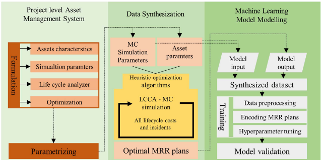
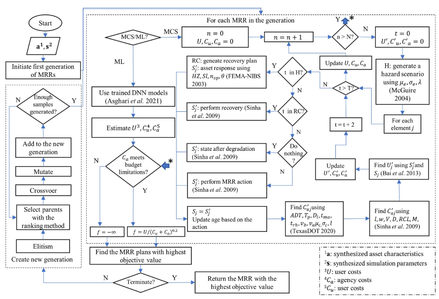
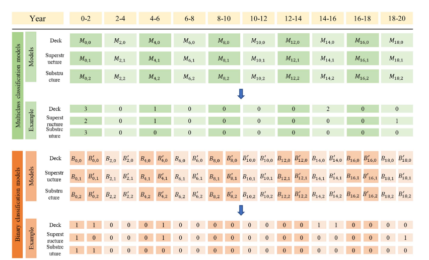

Table of Contents
Motivation
Imagine you’re tasked with making a big decision—say, managing a portfolio of investments, pricing a derivative, or planning maintenance for a city’s infrastructure, or optimizing a supply chain. You need to weigh costs, risks, and benefits over time, but multiple uncertainties make it a computationally intensive task. Traditionally, you’d run Monte Carlo simulations to estimate the outcomes, but it can take minutes, hours, days, or even months, depending on the complexity of the model.
What if you could get the same insights in milliseconds or even microseconds?
That’s what this paper is all about. I developed a way to use artificial intelligence (AI) to speed up these calculations, making it easier to make decisions quickly and confidently.
Given my background in infrastructure asset management, the example is about some infrastructure project. But the method is general and can be applied to any Monte Carlo simulation.
The paper is published in the ASCE Journal of Management in Engineering.
Why it matters
It matters for the people who need to optimize a heuristic algorithm, but at the same time, they want to get the results as fast as possible. In finance, where asset managers juggle thousands of investments amid constant uncertainty, traditional methods like Monte Carlo simulations are just too slow—forcing tough choices between speed and accuracy.
The proposed machine learning approach changes the game by delivering near-optimal decisions—like when to buy, sell, or rebalance assets—up to a million times faster. This breakthrough means institutions can manage huge portfolios in real time, make smarter decisions, and even support sustainability goals, all without sacrificing precision.
How it works
The methodology leverages an ensemble of random forests, a type of ML model, to predict optimal intervention strategies for financial assets. Here’s a simplified breakdown:
- Data Generation: The approach starts by creating a large dataset of semisynthesized financial assets, such as hypothetical investment portfolios with varying characteristics (e.g., asset type, risk profile, market conditions) and MCS parameters (e.g., volatility, interest rates). These are paired with optimal intervention plans derived from traditional optimization methods like genetic algorithms (GA).
- Model Training: An ensemble of random forests models is trained on this dataset. The input variables include asset characteristics (e.g., expected returns, liquidity) and simulation parameters, while the output is the optimal intervention plan (e.g., buy, sell, hold, or rebalance). Random forests excel here due to their ability to handle imbalanced, multioutput, and multiclass problems without requiring extensive data preprocessing.
- Prediction: Once trained, the model can predict intervention timings for new assets almost instantly, bypassing the need for time-consuming simulations. The study achieved over 95% accuracy on test data and 89% accuracy on real-world asset networks, demonstrating reliability.
- Preprocessing and Tuning: Asset characteristics and parameters are normalized or encoded (e.g., one-hot encoding for asset types), and constant variables are removed to streamline the model. Hyperparameters, such as the number of trees and maximum depth, are tuned using grid search to optimize performance.

How it can be used
To be honest, not much non-linear optimization is done in the finance industry. But the methodology can be used to estimate the results of any optimization algorithm.
It is orders of magnitude faster than the traditional methods. If the optimization algorithm is the bottleneck, this method can be used to make things lightning fast.
